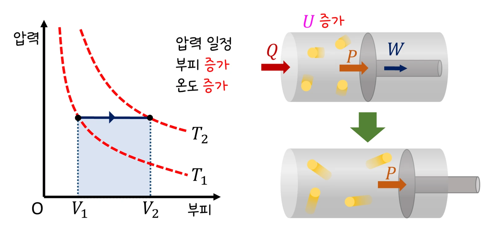

고3 역학과 에너지 · Ⅱ 열과 에너지 · 웹툰 8~9화 「수증기가 더 뜨겁다」·「펌프가 뜨거워지는 이유」
기체의 상태 변화와 열역학 제1법칙 — Q = ΔU + W
실험에서 단원자 이상 기체 0.1 mol을 처음 부피(1~3 L)·온도(300~500 K)에서 등압 팽창·등적 가열·등온 팽창·단열 팽창(변화 배율 1.5~3배)시키며 P–V 그래프, 한 일 W, 내부 에너지 변화 ΔU, 출입한 열 Q를 기록했습니다. 같은 부피 변화라도 과정에 따라 열의 출입과 온도 변화가 달랐습니다. 열역학 제1법칙과 네 과정을 정리합니다.
- 웹툰 8~9화
- 실험: 네 과정 비교
- 과학 원리
- 자습 노트
- 08 열기관
실험에서 얻은 것
실험 데이터 되짚기
0.1 mol 단원자 기체, U = (3/2)nRT, γ = 5/3. 처음 300 K, 1.0 L → P₁ = 249 kPa. 부피(등적은 온도) 2배 기준.
| 과정 | 나중 상태 | 기체가 한 일 W | ΔU | 받은 열 Q | 특징 |
|---|---|---|---|---|---|
| 등압 팽창 | 2.0 L, 600 K, 249 kPa | +249 J | +374 J | +623 J | 열의 60 % 내부 에너지, 40 % 일 |
| 등적 가열 | 1.0 L, 600 K, 498 kPa | 0 | +374 J | +374 J | 받은 열이 모두 온도로 |
| 등온 팽창 | 2.0 L, 300 K, 125 kPa | +173 J | 0 | +173 J | 받은 열이 모두 일로 |
| 단열 팽창 | 2.0 L, 189 K, 78 kPa | +138 J | −138 J | 0 | 일한 만큼 온도 하강 |
기체가 한 일은 P–V 그래프 아래 넓이입니다. 같은 처음·나중 부피라도 경로에 따라 W와 Q가 다릅니다. 단열: TV^(γ−1) = 일정 → 부피 2배면 T는 2^(−2/3) = 0.63배.
개념 정리
1. 열역학 제1법칙과 네 과정 (웹툰 9화)
기체 분자들의 운동 에너지 합이 내부 에너지 U — 이상 기체는 분자 수와 절대 온도에 비례(단원자 U = (3/2)nRT). 기체에 열 Q를 주면 일부는 U를 올리고 일부는 피스톤을 미는 일 W가 됩니다: Q = ΔU + W(에너지 보존을 열에 적용). 웹툰: 1.0 × 10⁵ Pa에서 500 J을 받아 부피 0.002 m³ 증가 → W = 200 J, ΔU = 300 J. 등적: 부피가 변하지 않으니 W = 0, Q = ΔU(예측 게임 — 뭉치 ‘열을 받았으니 일도 양수’, 제로 ‘일은 부피가 변해야 하니 0’). 등압: W = PΔV, Q = (5/2)nRΔT — 같은 온도 변화에 더 많은 열 필요. 등온: ΔU = 0, Q = W = nRT ln(V₂/V₁)(300 K·2배 → 173 J). 단열: Q = 0, W = −ΔU → 기체가 일한 만큼 식음; PV^γ = 일정, TV^(γ−1) = 일정. 빠르게 펌프를 누르면 열이 드나들 시간이 없어 해 준 일이 모두 내부 에너지로 → 펌프가 뜨거워짐(단열 압축); 스프레이 캔이 차가워지고 상승 공기가 식어 구름이 되는 것은 단열 팽창.
교재 그림
등압 팽창과 단열 팽창


위: 등압 팽창은 열 Q를 받아 내부 에너지 U도 늘고 일도 합니다. 아래: 단열 팽창은 열이 드나들지 않아 일한 만큼 U가 줄고 온도가 낮은 등온선(T₁)으로 내려갑니다. 두 그래프 모두 파란 넓이가 기체가 한 일입니다.
움직여 보기
네 과정을 P–V 그래프로 — 넓이가 곧 일
노란 넓이가 기체가 한 일 W입니다. 같은 1.0 L → 2.0 L라도 경로에 따라 넓이(W)와 받은 열(Q)이 다릅니다. 등적은 넓이 0(W = 0), 등온은 ΔU = 0, 단열은 Q = 0이라 일한 만큼 온도가 189 K로 떨어집니다. 끝값을 표 1과 맞춰 보세요. (0.1 mol 단원자 이상 기체, 처음 300 K·1.0 L·249 kPa, 천천히 일어나는 과정)
2. 비열·잠열과 이상 기체 법칙 (웹툰 8화)
온도 변화의 열 Q = cmΔT, 상태 변화의 열 Q = mL(잠열). 얼음 1 kg의 가열 곡선: −10 → 0 ℃ 21 kJ, 융해 334 kJ, 물 0 → 100 ℃ 420 kJ, 기화 2 260 kJ — 예측 게임 ‘100 ℃ 물과 수증기, 어느 쪽 화상이 심할까?’: 수증기는 응결하며 기화열을 추가로 내놓아 훨씬 위험합니다. 물의 큰 비열이 해안 기후를 온화하게 하고 해륙풍을 만듭니다. 이상 기체 법칙 PV = nRT(R = 8.31): 온도 일정하면 PV 일정(보일), 압력 일정하면 V ∝ T(샤를). 겨울 타이어: 부피 일정, 300 → 270 K면 압력 0.9배 — 공기가 샌 게 아니라 식은 것. 디젤 엔진은 단열 압축만으로 연료를 점화 온도(약 500 ℃)까지 올립니다.
움직여 보기
얼음 1 kg을 끓여 수증기로 — 열은 어디에 가장 많이 들까?
열을 계속 넣는데도 녹는 동안(0 ℃)과 끓는 동안(100 ℃)에는 온도가 그대로입니다 — 열이 분자 사이 결합을 끊는 데(잠열) 쓰이기 때문입니다. 가장 긴 구간은 기화(2 260 kJ)로, 물을 데우는 열(420 kJ)의 5배가 넘습니다. 100 ℃ 수증기 화상이 더 심한 까닭입니다. (1 기압, 얼음 −10 ℃에서 시작, 비열 얼음 2.1·물 4.2 kJ/(kg·℃))
3. 모형과 실제, 생활 속에서
이상 기체·준정적(천천히) 과정 가정입니다. 실제 기체는 분자 사이 힘·부피 때문에 고압·저온에서 벗어나고, 빠른 팽창은 평형을 벗어나 P–V 곡선이 정의되지 않습니다. 완전한 단열은 없어 실제 단열 팽창은 벽으로 열이 조금 새어 등온과 단열 사이(폴리트로픽)로 나타나며, 이원자 기체(공기)는 γ = 1.4, U = (5/2)nRT입니다. P–V 그래프에서 한 바퀴 돌아 처음 상태로 오면 둘러싼 넓이만큼 일을 한 것 — 바로 열기관(08 실험실)입니다.
γ = 5/3 (단원자), 1.4 (이원자) · 0.1 mol·300 K·2배: 등압 Q 623 J · 등적 374 J · 등온 173 J · 단열 T 189 K · 잠열 융해 334, 기화 2 260 kJ/kg
“9라운드! 단단히 고정된 강철 용기 속 기체에 열을 가할 때 기체가 외부에 한 일은? 열을 받았으니 일도 했겠지. 난 ‘양수’.” “일은 부피가 변해야 하잖아. 부피가 그대로면 W = 0. 받은 열은 전부 내부 에너지로!”
웹툰 9화 · 등적 W = 0 / 등압 W = PΔV / 등온 ΔU = 0 — 제로 5 : 4 뭉치
“펌프가 뜨거워졌어요. 불도 없는데?” “아주 빠르게 압축하면 열이 드나들 시간이 없어서 Q ≈ 0이야. 그러면 외부에서 해 준 일이 모두 내부 에너지로 가서 온도가 올라가. 이게 단열 압축이지.”
웹툰 8~9화 · 뭉치: “8라운드! 똑같이 100 ℃인 물과 수증기, 어느 쪽 화상이 더 심할까? 난 수증기.” — 제로 4 : 4 뭉치
영상으로 보기
예제
0.1 mol 단원자 기체를 300 K에서 부피 3배로 등온 팽창시킨 뒤 같은 부피로 단열 팽창시켰다면 각각의 W와 T는?
등온: W = Q = 0.1 × 8.314 × 300 × ln3 = 274 J, T 300 K 유지. 단열: T₂ = 300 × 3^(−2/3) = 144 K, ΔU = 1.5 × 0.1 × 8.314 × (144 − 300) = −195 J → W = 195 J(등온보다 적음 — 식으면서 압력이 더 빨리 떨어지므로).
자전거 펌프에서 공기(γ = 1.4)를 부피 1/5로 빠르게 압축하면 온도는? (처음 300 K)
TV^(γ−1) = 일정 → T₂ = 300 × 5^0.4 = 300 × 1.90 = 약 570 K(약 300 ℃). 디젤 엔진은 압축비 15~20으로 700 K 이상까지 올려 연료를 자연 점화시킵니다.